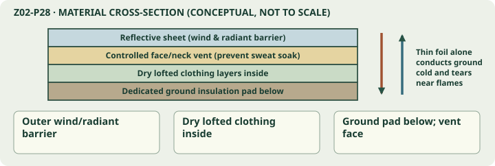

Z02-P28 · Shelter and housing · New manuscript
Use reflective emergency blankets and bivies while managing vapor buildup
Deploy emergency reflective sheets or sacks effectively as wind and radiant barriers without creating hypothermia-inducing condensation.
When it applies · Unplanned cold stops, waiting for rescue or augmenting insulation during emergency delays.
Equipment · Heavy-duty reflective emergency blanket or bivy sack, dry insulating layers and separate ground pad.

Actions
- Use an emergency reflective sheet primarily as a windproof outer shell or lean-to reflector over existing dry insulating layers and a ground barrier—thin foil alone conducts cold straight from the ground.[E09, E05, E15]
- Keep the face unobstructed and leave a controlled neck or side opening on emergency bivy sacks so sweat and warm breath can escape rather than drenching your inner clothes.[E10, E09, ED]
- Handle thin metalized film gently away from sharp twigs, rocks and open flames—standard mylar tears instantly from a small nick and melts near fire.[E09, C02, ED]
Failure recognition · Climbing inside a sealed plastic emergency bag in damp clothes directly on frozen earth, waking soaked in trapped sweat and chilled by ground conduction.[E05, E09, E10]
Verify · Confirm dry insulation lies beneath and inside the reflective layer, breathing space is clear and edges are protected from tearing.[E05, E09, ED]
Stop or change course · Do not assume a pocket emergency blanket guarantees overnight winter survival; monitor companions for confusion or drowsiness and activate help early.[E06, E09, T03]
Evidence and editorial notes
- C02 · USDA Forest Service / Smokey Bear · Smokey Bear’s Campfire Safety Guide (agency PDF)
- Section: Build your campfire; choose a location · Conditions: Where campfires are currently permitted
Support: Use an established fire ring where required or available. Protect the area from nearby combustible materials, avoid windy conditions and keep water ready.
Limitations: Site clearances vary by fuel load, slope, and wind; no universal safe radius fits all terrain. · Conflicting evidence: None; aligns with USFS-FIRE.
Editorial note: Grounds site-selection and ring-preparation procedures. · Specialist reviewer: Fire prevention and land management
Primary source · checked 2026-11-24 - E05 · NWS · What To Do If You're Caught in a Winter Storm (current web edition)
- Section: Outside and find shelter · Conditions: Cold, wet or windy winter conditions
Support: Block wind, stay dry and keep off cold ground. Keep exposure reduction separate from making a fire.
Limitations: Improvised windbreaks do not provide rated thermal protection or snow-load capacity. · Conflicting evidence: None; aligns with CDC-H.
Editorial note: Separates wind, ground, and moisture heat-loss pathways. · Specialist reviewer: Cold-weather shelter specialist
Primary source · checked 2026-11-24 - E06 · CDC · Preventing Hypothermia (current web edition)
- Section: Recognizing and treating hypothermia · Conditions: Cold wet exposure; signs such as confusion, slurred speech, fumbling or drowsiness
Support: Suspected hypothermia warrants prompt help and protection from further cooling. It can occur above freezing if wet or chilled.
Limitations: Early mild shivering can mask rapidly worsening judgment impairment. · Conflicting evidence: None; aligns with ARC and WMS guidance.
Editorial note: Anchors exposure-to-medical escalation thresholds. · Specialist reviewer: Wilderness medicine
Primary source · checked 2026-11-24 - E09 · NPS · Ten Essentials (current web edition)
- Section: Insulation; Emergency Shelter · Conditions: Weather, terrain and expected overnight risk
Support: Extra clothing and usable emergency shelter belong in the route-specific kit.
Limitations: Emergency bivies and space blankets trap condensation and tear easily if misused. · Conflicting evidence: None; requires inspecting and practicing shelter deployment.
Editorial note: Supports overnight emergency shelter readiness. · Specialist reviewer: Cold-weather shelter and field education
Primary source · checked 2026-11-24 - E10 · NWS · What To Do If You're Caught in a Winter Storm (current web edition)
- Section: Outside > Protect yourself from frostbite and hypothermia · Conditions: Outdoor winter storm
Support: Keep clothing dry and avoid overexertion. Wetness accelerates cooling.
Limitations: Cotton retains moisture and accelerates conductive and evaporative heat loss. · Conflicting evidence: None; reinforces moisture-management layering.
Editorial note: Links sweat management to overnight insulation integrity. · Specialist reviewer: Cold-weather shelter and wilderness medicine
Primary source · checked 2026-11-24 - E15 · NWS · Cold Weather Safety (current web edition)
- Section: Cold Weather Safety > Wind Chill and Dressing for Cold · Conditions: Cold, windy conditions where exposed skin cools rapidly
Support: Wind removes the thin warm air boundary layer around skin and permeable fabrics, sharply accelerating heat loss and frostbite onset; windproof outer shells and sheltered microclimates mitigate convective loss.
Limitations: Wind chill charts apply to exposed skin and do not change freezing point of water or equipment. · Conflicting evidence: None; clarifies physical mechanism of convective heat loss.
Editorial note: Supports wind-block geometry, shell layering, and wind-chill risk decisions. · Specialist reviewer: Cold-weather shelter and meteorology
Primary source · checked 2026-11-24 - T03 · CDC · Preventing Hypothermia (current web edition)
- Section: Warning signs; What to do · Conditions: Cold exposure and suspected hypothermia
Support: Confusion, slurred speech and drowsiness are warning signs. Obtain medical attention and protect from further cold.
Limitations: Shivering may stop as hypothermia worsens; absence of shivering is not reassurance. · Conflicting evidence: None; aligns with WMS cold guidelines.
Editorial note: Core neurological red-flag trigger for stopping activity and calling rescue. · Specialist reviewer: Wilderness medicine
Primary source · checked 2026-11-24
Source lineage · NPS Ten Essentials and NWS winter; new manuscript · Classification · New manuscript.